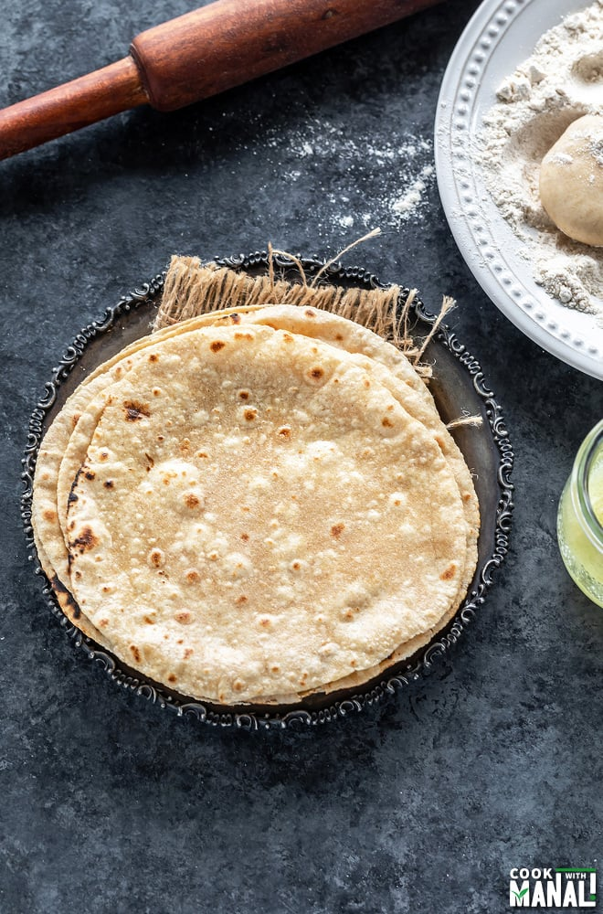

Chapati

Description:
Chapati, also known as roti, is a traditional Indian unleavened flatbread that is a staple in Indian cuisine. It is a fundamental part of meals in many Indian households.
The taste of chapati is often described as wholesome, earthy, and slightly nutty making it a perfect pairing to your Chicken Biriyani.
The soft and chewy texture of chapati can provide a nice contrast to the aromatic and spiced rice dish.
The contrast in textures, with the soft and chewy chapati alongside the flavorful and spiced rice, creates a well-balanced and satisfying meal experience. This combination not only brings together diverse flavors but also reflects the cultural traditions and culinary practices that make Indian cuisine so rich and diverse.
Ingredients:
- 2 cups whole wheat flour (atta)
- Water (for kneading)
- 1/2 teaspoon salt (optional)
- Ghee or oil (for brushing, optional)
Instructions:
- Prepare the Dough:
- In a large mixing bowl, add the whole wheat flour. Optionally, add salt for taste.
- Gradually add water while kneading the dough. Aim for a soft, smooth, and elastic consistency.
- Knead the dough for about 5-7 minutes to develop gluten. This helps in making the chapatis soft.
- Rest the Dough:
- Cover the dough with a damp cloth and let it rest for at least 30 minutes. This resting period allows the gluten to relax, making the dough easier to work with and the chapatis softer.
- Divide the Dough:
- After resting, divide the dough into golf ball-sized portions.
- Rolling the Chapatis:
- Take one portion of the dough and roll it into a smooth ball between your palms.
- Dip the ball into dry flour and then roll it out into a thin, round disc on a floured surface. Aim for an even thickness.
- Cooking the Chapatis:
- Preheat a griddle or flat pan (tava) over medium-high heat.
- Place the rolled-out chapati onto the hot surface. Cook for about 20-30 seconds until you see bubbles forming.
- Flipping and Cooking:
- Flip the chapati using a spatula. It should have some brown spots on the cooked side.
- Cook the other side for about 20-30 seconds.
- Puffing (Optional):
- You can try gently pressing the edges with a kitchen cloth, and the chapati might puff up. This step is optional but adds to the softness.
- Finishing Touch (Optional):
- Optionally, you can brush the cooked chapati with ghee or oil for added flavor.